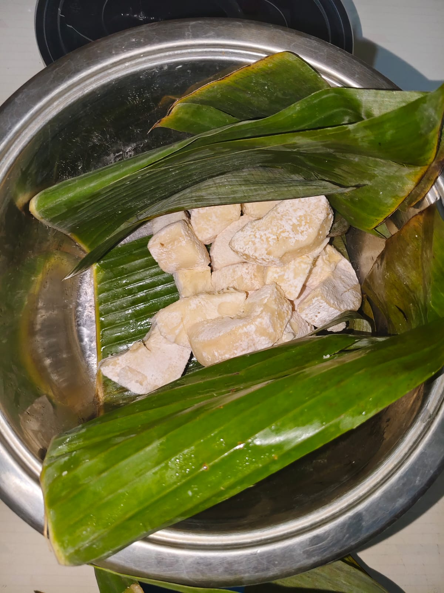

About My Project
Penelitian ini membahas pemanfaatan bioteknologi konvensional terutama dalam bidang pangan serta menguji karakteristik tape singkong menggunakan 3 jenis singkong berbeda.Pada penelitian ini digunakan jenis singkong karet, mentega, dan ketan. Tujuan penelitian ini adalah untuk mengetahui perbedaan karakteristik tape yang dihasilkan, seperti rasa, aroma, tekstur, dan warna. Hasil penelitian menunjukkan bahwa jenis singkong yang digunakan memengaruhi karakteristik tape yang dihasilkan setelah proses fermentasi. Dengan demikian, pemilihan jenis singkong yang tepat dapat menghasilkan tape singkong dengan kualitas yang lebih baik.
Cara pembuatan
Alat dan bahan yang digunakan untuk membuat tape singkong terdiri dari beberapa perlengkapan dan bahan utama. Alat yang digunakan antara lain pisau, talenan, panci kukusan, kompor, baskom atau wadah, sendok, serta wadah fermentasi seperti toples atau kotak. Sementara itu, bahan yang digunakan meliputi singkong, ragi tape, daun pisang, dan air bersih. Dalam penelitian ini, jenis singkong yang digunakan adalah singkong mentega, singkong ketan, dan singkong karet untuk mengetahui perbedaan hasil fermentasi pada masing-masing jenis singkong.
Langkah pertama dalam penelitian ini adalah menyiapkan seluruh alat dan bahan yang diperlukan. Setelah itu, singkong yang akan digunakan direndam dan dicuci hingga bersih. Kemudian, kulit dari singkong mentega, ketan, dan karet dikupas terlebih dahulu. Selanjutnya, singkong dipotong menjadi bagian-bagian kecil dan dicuci kembali hingga benar-benar bersih. Setelah itu, singkong dikukus selama 20 menit sampai matang. Singkong yang telah matang kemudian diangkat dan ditiriskan, lalu dibiarkan hingga dingin. Ragi tape dihaluskan terlebih dahulu, kemudian ditaburkan secara merata pada masing-masing jenis singkong. Setelah itu, singkong dimasukkan ke dalam wadah yang telah dilapisi daun pisang. Wadah kemudian ditutup dengan rapat dan disimpan pada suhu ruang selama 3 hari agar proses fermentasi berlangsung. Setelah proses fermentasi selesai, tape singkong siap untuk diamati atau dikonsumsi.

Result
Hasil penelitian menunjukkan bahwa proses fermentasi pada singkong menyebabkan perubahan pada aroma, rasa, warna, dan tekstur. Pada awalnya, singkong memiliki tekstur yang keras, aroma yang lemah, dan rasa yang hambar. Setelah dilakukan fermentasi menggunakan ragi, singkong mengalami perubahan menjadi lebih lunak, beraroma khas tape, dan memiliki rasa yang lebih manis. Perubahan ini terjadi karena proses penguraian pati menjadi gula oleh mikroorganisme selama fermentasi.
Berdasarkan hasil pengamatan, setiap jenis singkong menghasilkan tape dengan karakteristik yang berbeda. Singkong mentega memiliki tekstur, aroma, dan rasa yang paling seimbang. Sementara itu, singkong karet menghasilkan tape dengan tekstur yang sangat lunak dan rasa yang lebih manis.Sedangkang singkong ketan, menghasilkan rasa manis dengan sedikit rasa asam, bau yang menyengat serta tekstur yang seimbang. Perbedaan hasil tersebut menunjukkan bahwa jenis singkong dapat mempengaruhi kualitas tape singkong yang dihasilkan.
Jayson Ivander Lesmana
9D/11